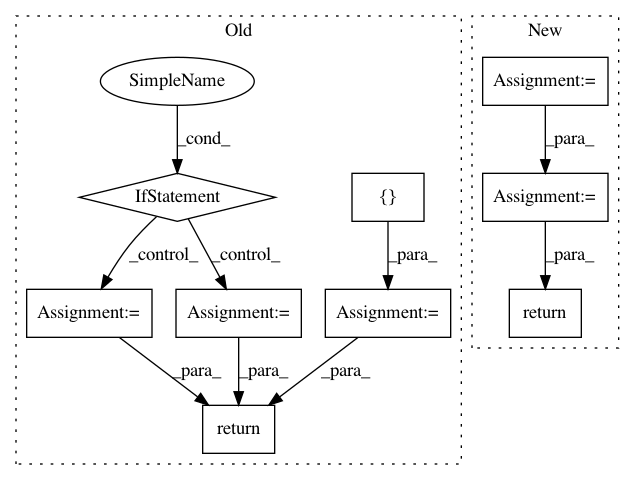

2ee8ac1546400645908b61ef015cdf5d71aa34cc,utils/datasets.py,,pad_to_square,#,20
Before Change
h, w = image_np.shape[:2]
dim_diff = np.abs(h - w)
pad1, pad2 = dim_diff // 2, dim_diff - dim_diff // 2
new_shape = (max([h, w]), max([h, w]), 3)
padded_image = np.full(new_shape, constant_value, dtype=np.float32)
if h < w:
padded_image[pad1 : pad1 + h, :] = image_np
padding = (0, pad1, 0, pad2)
else:
padded_image[:, pad1 : pad1 + w] = image_np
padding = (pad1, 0, pad2, 0)
return padded_image, padding
class ImageFolder(Dataset):
def __init__(self, folder_path, img_size=416):
After Change
// Determine padding
pad = ((pad1, pad2), (0, 0), (0, 0)) if h <= w else ((0, 0), (pad1, pad2), (0, 0))
// Add padding
img = np.pad(img, pad, "constant", constant_values=127.5)
return img, pad
class ImageFolder(Dataset):
def __init__(self, folder_path, img_size=416):
In pattern: SUPERPATTERN
Frequency: 3
Non-data size: 9
Instances
Project Name: eriklindernoren/PyTorch-YOLOv3
Commit Name: 2ee8ac1546400645908b61ef015cdf5d71aa34cc
Time: 2019-04-22
Author: eriklindernoren@live.se
File Name: utils/datasets.py
Class Name:
Method Name: pad_to_square
Project Name: dit/dit
Commit Name: a5f32c41b01f8e058c414668d2f9b578300f45b0
Time: 2015-03-14
Author: ryangregoryjames@gmail.com
File Name: dit/multivariate/entropy.py
Class Name:
Method Name: entropy
Project Name: dit/dit
Commit Name: a1890b56835ef626b1a32edcaf28c1e2b10baa48
Time: 2015-03-19
Author: chebee7i@gmail.com
File Name: dit/algorithms/maxentropyfw.py
Class Name:
Method Name: isolate_zeros